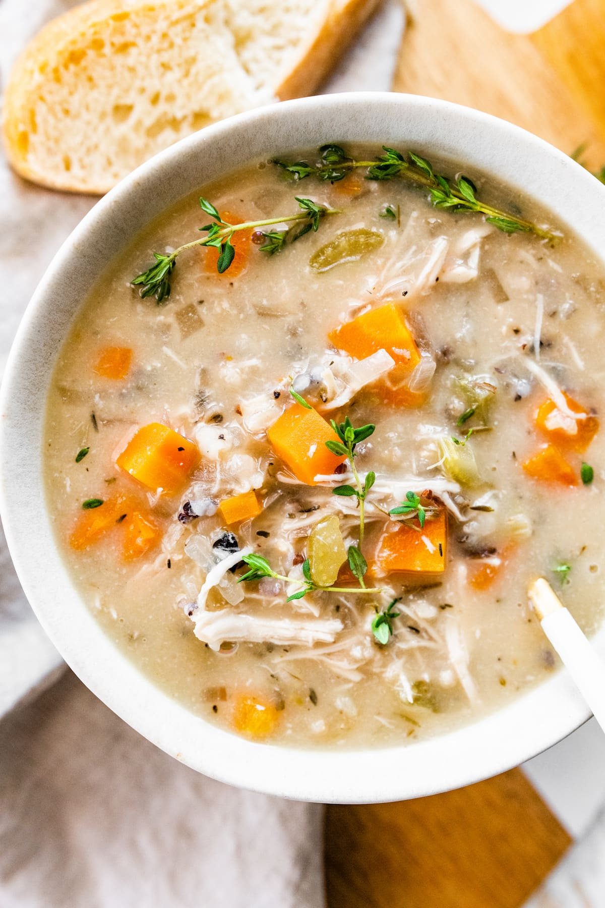

Chicken Wild Rice Soup

Description
This Crockpot Chicken Wild Rice Soup is so darn simple to make and goes perfectly with a piece of crusty bread on a cold winter night.
Makes roughly 8 servings
Ingredients
- 1 cup uncooked wild rice
- 1 pound chicken breasts
- 2 cups mirepoix (chopped celery, carrots, and onions)
- 6 cups chicken broth
- 1 teaspoon poultry seasoning
- 1/2 cup butter
- 3/4 cup flour
- 2 cups whole milk
- a few tablespoons white wine (optional)
- up to 2 cups additional milk or water
Steps
- Rinse the wild rice. Place the uncooked wild rice, raw chicken, mirepoix, chicken broth, and poultry seasoning in a crockpot. Cover and cook on low for 7-8 hours. The chicken should be cooked through and the rice should be soft. There will be extra liquid in the crockpot; do not drain.
- Remove the chicken breasts from the crockpot and allow to cool slightly. Using two forks, shred the chicken. Return the shredded chicken to the crockpot.
- When rice and chicken are done cooking, melt the butter in a saucepan. Add the flour and let the mixture bubble for 1 minute. Slowly whisk in the whole milk until a thick, creamy mixture forms. Stir in the wine.
- Add this to the rice and chicken in the crockpot and stir to combine. Add extra water or milk to adjust the consistency as you like it. Season with additional salt and pepper.
Notes
The poultry seasoning is a mix of several things, including thyme and sage. Even though it’s only a teaspoon, do not omit this because it adds a lot of the flavor. If you don’t have any, just use any other herb seasonings that you like. Thyme and sage are the best in my opinion.
Back to Home